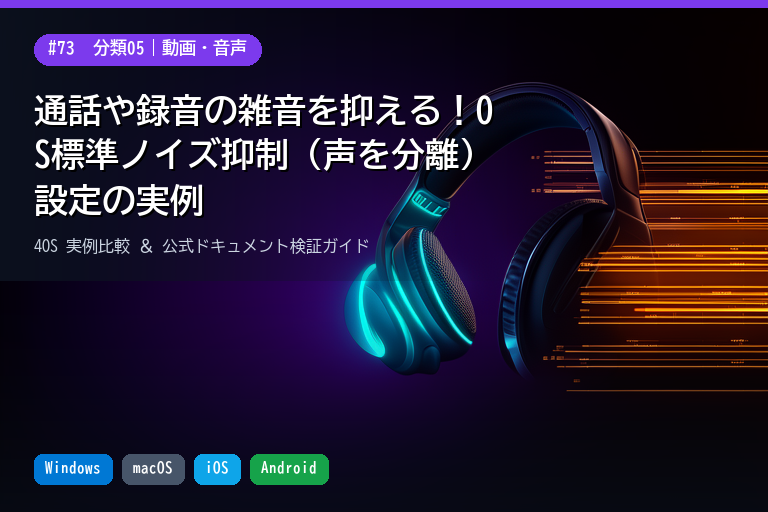

#73｜分類05: 動画・音声・音楽制作 2026-11-26

通話や録音の雑音を抑える！OS 標準ノイズ抑制（声を分離）設定の実例｜Windows・macOS・iOS・Android
「Web会議や動画撮影の際、周囲の騒音が入ってしまって困る」「自分の声だけをクリアに抽出したい」といった悩みは、クリエイターやビジネスパーソンにとって共通の課題です。
結論から申し上げますと、現在、Windows、macOS、iOS、AndroidのいずれのOSにおいても、標準機能だけで「AIによる高度な声の分離（Vocal Isolation）」を一発で完結させるボタンや設定項目は存在しません。 多くのユーザーが期待する「背景音を完全に消し、人の声だけを残す」という処理は、OSレベルではなくアプリ側、あるいは外部ツールやハードウェアの領域となります。
この記事では、各OSにおける標準機能でどこまでできるのか、そして「声を分離したい」という目的を達成するために必要な代替手段について、実例を交えて徹底解説します。
4OS比較早見表
| OS | 通話中のノイズ抑制 | 録音後の音声編集（ノイズ除去） | 声の分離（AI処理） | 主な対応方法 |
|---|---|---|---|---|
| Windows 11 | アプリ内設定（Teams/Zoom等） | Clipchamp（簡易フィルターのみ） | 標準機能なし | 外部ツール・ハードウェア |
| macOS | FaceTime / アプリ内設定 | QuickTime（編集機能なし） | 標準機能なし | GarageBand・外部ツール |
| iOS | FaceTime（簡易フィルタ） | 標準アプリでは非対応 | 標準機能なし | GarageBand・外部ツール |
| Android | Google Meet / メーカー固有設定 | 標準アプリでは非対応 | 標準機能なし | メーカー独自機能・外部ツール |
1. Windows 11 での実例手順
Windows環境では、OS全体のシステム設定として「すべてのマイク入力からノイズをAIで消す」というスイッチは存在しません。基本的には利用するアプリケーション側の設定に依存します。
① 通話中の雑音低減
Microsoft TeamsやZoomなどの主要な会議ツールには、高度なノイズ抑制機能が内蔵されています。
* Teamsの場合: 会議中に「…（詳細）」→「デバイス」→「マイクプロパティ」を開き、「エコーキャンセル」や「ノイズ除去」をオンにします。
* Zoomの場合: 設定→オーディオ→「雑音抑制」の項目で、レベルを選択して有効化します。
② 録音時の後処理（標準機能）
Windows標準の動画編集アプリ「Clipchamp」を使用する場合、エフェクトタブに「ノイズ除去」フィルターが存在しますが、これはホワイトノイズなどの減衰を目的としたものであり、「声と背景音を物理的に分離する」ほどの高度な処理は行えません。
③ OS 標準機能の制限事項
Windowsの標準オーディオスタックには、マイク入力をリアルタイムで解析し、「人の声」だけを選別して背景音をゼロにする独立したAIモジュールは組み込まれていません。システム全体のサウンド設定から全アプリに一律適用するノイズ抑制スイッチも存在しないため注意が必要です。
④ よくあるトラブルと解決法
- 「マイクが認識されない・音が小さい」
- 原因: デフォルトデバイスの選択ミス、またはプライバシー設定によるブロック。
- 対策: 「設定→システム→サウンド」で正しい入力デバイスを選択。「プライバシーとセキュリティ」で「マイクロフォンへのアプリのアクセス許可」がオンになっているか確認してください。
- 「Teams でノイズ除去が効かない」
- 原因: アプリのプロセス競合やドライバーの不具合。
- 対策: Teamsをタスクマネージャーから完全に終了させて再起動してください。解決しない場合は「デバイスマネージャ」でマイクを一度無効化→有効化してリセットします。
- 「録音時に風切り音が強調される」
- 原因: OS標準機能では除去不可能な物理的制約。
- 対策: Clipchampでは除去できないため、Webブラウザで動作する Adobe Podcast Enhance や、無料ソフトの Audacity を使用して後処理を行うことを強く推奨します。
2. macOS での実例手順
macOSは高品質なオーディオスタック（Core Audio）を備えていますが、これも「リアルタイムでの声と雑音の分離」を標準機能として提供しているわけではありません。
① 通話中の雑音低減
- FaceTime: 「…」→「マイク」の設定で「ノイズ除去」を選択します（iOS/macOS共通の簡易フィルタ）。
- Zoom: 設定→オーディオ→「雑音抑制」を有効化します。
② 録音時の後処理（標準機能）
QuickTime Playerは非常に優れた録画・録音ツールですが、音声編集機能（ノイズ除去やエフェクトの適用）は一切含まれていません。 トリミングや書き出しのみが可能です。
③ OS 標準機能の制限事項
macOSのシステムオーディオスタックは高品質ですが、リアルタイムで「声と雑音を分離するAIプロセッサ」を内蔵しているわけではありません。QuickTime Playerにおいても、Apple公式ガイドに記載がある通り、ノイズ除去や音声抽出といった高度な編集機能は標準では提供されていません。
④ よくあるトラブルと解決法
- 「FaceTime で相手の声が聞こえない・雑音だけが流れる」
- 原因: マイク設定の誤り、またはBluetoothヘッドセットの接続不安定。
- 対策: 「コントロールセンター→音声入力」で正しいデバイスを選択。「システム設定→サウンド」で出力/入力バランスを確認し、Bluetooth機器を一度解除して再接続してください。
- 「Zoom でノイズ抑制が効かない」
- 原因: macOSのセキュリティ設定でマイクアクセス権が剥奪されている。
- 対策: 「システム設定→プライバシーとセキュリティ→マイクロフォン」からZoomのチェックが入っているか確認し、アプリを再起動してください。
- 「録音ファイルにヒスノイズ（サーッという音）が残る」
- 原因: macOS標準機能では除去不可。
- 対策: QuickTime Playerでは処理できないため、Mac標準の GarageBand を起動し、「オーディオエフェクト→ノイズゲート」を適用するか、外部ツールを使用してください。
3. iOS（iPhone / iPad）での実例手順
モバイル環境では、ハードウェアレベルでの簡易的なフィルタリングは行われていますが、録音後の編集機能は非常に限定的です。
① 通話中の雑音低減
- FaceTime: 「…」→「マイク」で「ノイズ除去」をオンにします（iOSシステムレベルの簡易フィルタ）。
- 電話アプリ: キャリアや機種により「通話品質向上」等のオプションがある場合がありますが、OS共通の汎用スイッチではありません。
② 録音時の後処理（標準機能）
「メモ」アプリや「写真/ビデオ編集」では音声トラックのノイズ除去は非対応です。「サウンドライブラリ」のような独立したオーディオエディタも標準では存在しません。
③ OS 標準機能の制限事項
iOSのマイク入力はハードウェアレベルで簡易フィルタリングされますが、録音後にファイルを開いてノイズを除去する編集機能は標準アプリには存在しません。iPhone 15 Proなどの最新機種でも、「AIで声だけを抽出して背景音を消す」という公式機能は現時点では非対応です。
④ よくあるトラブルと解決法
- 「FaceTime でノイズ除去スイッチが見つからない」
- 原因: iOSバージョンの相性、またはアプリのキャッシュ。
- 対策: 「設定→FaceTime」で通話品質を確認。「コントロールセンター」からFaceTimeを一度終了し、再度起動して「マイク」アイコンをタップしてください。
- 「Bluetooth イヤーホンのノイズが iPhone に伝わる」
- 原因: Bluetoothの接続プロトコル（HSP/HFP）による帯域制限。
- 対策: 「設定→Bluetooth」でペアリングを解除し再登録。「設定→サウンド」で出力デバイスが正しく選択されているか確認してください。
- 「録音した音声に風切り音が残る」
- 原因: 標準の編集機能（写真/ビデオ）にはノイズ除去フィルタがないため。
- 対策: GarageBand アプリをインストールして「オーディオエフェクト→ノイズゲート」を使用するか、Webブラウザから Adobe Podcast Enhance へアップロードしてください。
4. Android での実例手順
Androidはメーカー（Google, Samsung等）によって挙動が大きく異なるため注意が必要です。
① 通話中の雑音低減
- Google Meet: 「…」→「デバイス」でマイクを選択し、「エコーキャンセル」「ノイズ除去」をオンにします。
- 電話アプリ (Pixel): 設定内の「通話品質向上」など、メーカー固有の機能が搭載されている場合があります。Galaxyの場合はSamsung Phoneアプリ内での設定を確認してください。
② 録音時の後処理（標準機能）
「音声メモ」や「カメラ/ビデオ編集」ではノイズ除去は非対応です。「Google フォト」でも動画編集にはオーディオエフェクトが含まれていません。
③ OS 標準機能の制限事項
Androidはメーカー独自のカスタムROMにより挙動が異なります。「ノイズ除去」スイッチの有無は機種に大きく依存します。Pixelであれば「通話品質向上」がありますが、他のメーカーではアプリ固有の設定が必要になることがほとんどです。
④ よくあるトラブルと解決法
- 「マイク入力が反応しない・ノイズがひどい」
- 原因: アプリの権限不足、またはマイクの物理的遮蔽。
- 対策: 「設定→アプリ→（該当アプリ）→権限」でマイク許可を確認してください。
- 「特定の通話アプリでノイズ除去が効かない」
- 原因: アプリ内でのマイク選択ミス、またはOSの省電力モードによる制限。
- 対策: 通話アプリ内の設定を見直し、省電力モードをオフにして試してください。
- 「録音した動画の音声からノイズを消したい」
- 原因: 標準のビデオ編集機能では対応不可。
- 対策: Android標準機能では困難なため、外部の動画編集アプリや Adobe Podcast Enhance を活用してください。
よくあるトラブルと解決チェックリスト
| トラブル内容 | 原因の可能性 | 解決策・チェック項目 |
|---|---|---|
| マイクが認識されない | プライバシー設定の拒否 | 設定メニューから「マイクへのアクセス許可」をONにする。 |
| ノイズ除去が効かない | アプリ側の設定未適用 | 各アプリ（Teams/Zoom等）内のオーディオ設定を再確認する。 |
| 風切り音や環境音が消えない | OS標準機能の限界 | 外部ツール（Adobe Podcast Enhance, Audacityなど）へ移行する。 |
| Bluetooth機器で音が途切れる | 通信プロトコルの制限 | 有線接続を試すか、高品質なオーディオインターフェースを検討する。 |
まとめ：快適なマルチOS環境を作るポイント
今回の調査で分かった通り、「OS標準機能だけで完璧に声を分離する」ことは現時点では難しいというのが実情です。しかし、これに落胆する必要はありません。プロの現場や快適な制作環境を求めるのであれば、以下の3つのアプローチを組み合わせるのが正解です。
- アプリ内機能を使い倒す: 会議ツール（Zoom/Teams）の標準ノイズ抑制は、まずはここから活用しましょう。
- 外部AIツールを活用する: 録音後の「声の分離」には、ブラウザで動く Adobe Podcast Enhance や、無料ソフトの Audacity を導入するのが最も手軽で強力な解決策です。
-
ハードウェアを強化する: ソフトウェアでの補正には限界があります。クリアな音声を求めるなら、以下の周辺機器の導入が非常に効果的です。
-
USBマイク / オーディオインターフェース: マイク入力自体のS/N比（ノイズの少なさ）を改善し、後処理を楽にします。
- 高速外付けSSD: 高音質な動画・音声素材を扱う際、編集時のストレスを軽減します。
- 高性能な動画編集ソフト: 標準アプリではできない高度なオーディオエフェクトやノイズ除去フィルターを適用できます。
OSの標準機能を正しく理解した上で、必要なツールを賢く組み合わせることで、雑音に邪魔されないクリアなコミュニケーション環境を実現しましょう。
参考文献・公式ドキュメント（一次情報ソース）
本記事の手順・仕様は以下の各OSおよびツールの公式ドキュメントに基づいています。OSアップデートによりメニュー名称や挙動が変わる場合があるため、最新仕様の確認にもご活用ください。